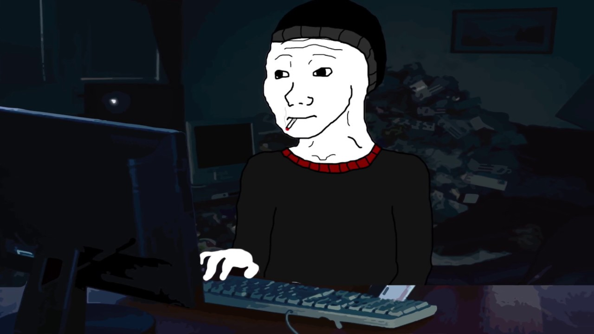

Michalovo
< ProKrasTynNárYum >
Jmenuji se Michal.
 moje manifestace. . .
Ne, vážně. Nejsem ničím známí a ani nijak vyjímečný.
Jsem obyčejný člověk snažící se dát tomu všemu, co se kolem něj děje, nějaký smysl.
Co je tohle za stránku?
Dobrá otázka. Sám vlastně ani nevím.
Nejspíše bych to popsal jako nějaká "digitální identita".
Slátanina životopisu, blogu a náhodných věcí mě blízkých i některým né až tak blízkých.
Tohle je panel Prokrastinace a jiných marnivostí:
 Filosofie
Filosofie FreeSoftware
FreeSoftware ThinkPad
ThinkPadProč vypadá tak... no, tak jak vypadá?
Protože to tak chci.
Přeci jen, je to moje stránka.
A můžu si s ní dělat co chci!
. . .
Dobře, teď něco racionálnějšího:
Nejsem web developer, kodér ani programátor - nepovažuji se rozhodně ani za nějakého "ajťáka". Prostě jsem se ve volném čase rozhodl naučit trochu HTML a CSS a své nově nabité (ne)znalosti se pokouším aplikovat tady.
Dnešní Web (internet) je přeplácaný, nabobtnalý behemot lačnící po vašich drahých datech a osobních informacích. Srážející Vaše drahé přístroje - notebooky, počítače a smartphony na kolena zatímco vy 2 minuty čekáte jen na to, až se Vám konečně načte facebooková stránka s fotkami roztomílých kočiček a Váš instagram plný vašich osobních fotografií a zážitků, které dobrovolně svěřujete do rukou někomu, koho ani vlastně neznáte, neznámo kam - kam mimochodem fyzicky ani vlastně nemáte přístup.

Proto tahle stránka existuje - je to takový můj malý osobní digitální ostrůvek, na kterém můžu být alespoň částečně svobodný. Mým cílem je taky právě ona magická jednoduchost - tuhle stránku bez problému zobrazíte snad na jakémkoliv zobrazovadle, které má přístup na internet.
Sakra, nebál bych se snad i tvrdit, že byste si tyhle řádky mohli klidně číst i na tamagochi!
"Od všeho trochu, ve výsledku nic."
Můj oblíbený slogan.
Tak trochu se s ním (bohužel) ztotožňuji.
Za tu relativně krátkou dobu, co kráčím tímto světem, jsem totiž lítal všemi směry, kam mě tak říkajíc vítr zrovna zavál.
...Od severu k jihu, od východu na západ...
Pracovní (ne)zkušenosti:
- Vystudovaný Masér.
- Po studiu jsem nějakou chvíli "budoval kariéru na pracáku".
- Pracoval jsem ve fabrikách u pásu.
- Chvíli jsem byl pokojská v hotelu a pradlena v prádelně (jo, umím mandlovat!)
-
- Prodavač v obchodě se mobily, smartphony - prostě telefony.
- (převážně jsem vnucoval lidem věci, které vlastně ani nepotřebují. Musel jsem jim proto vysvětlit, že je nutně k životu přece potřebují.)
- Neúspěšný student Filosofické fakulty v Brně, obor Filosofie.
- Absolvent ENGETO kurzu "Linuxová Systémová Administrace".
- Kancelářská krysa v jednom nejmenovaném nadnárodním korporátu.
- Menší kancelářská krysa v menším korporátu jako technická podpora.
No a konečně aktuálně:
Servisní Technik v jedné malé Brněnské firmě, která se specializuje na prodej repasovaných a předváděcích počítačů.
Zájmý a Prokrastinace:
Poloprofesionální ztráceč času, flagelant a vořežprut.
Výše zmínění ctnosti plnohodnotně doplňují následující kratochvíle:
- Technologický nadšenec - hlavně do té starší, poctivější a smysluplnější technologie.
- Jsem počítačoví kutil a samouk (takže by se dalo říct, že nikdy pořádně nevím, co vlastně dělám).
- Filosofie, převážně dumání nad pitomostma, které nikoho nezajímaj.
V mém životě prominují tyto tří základní pilíře:
- Hardware/PC - laptopy ThinkPad
- Software - Operační systém (GNU)Linux a FreeSoftware (Svobodný Software)
- Filosofie